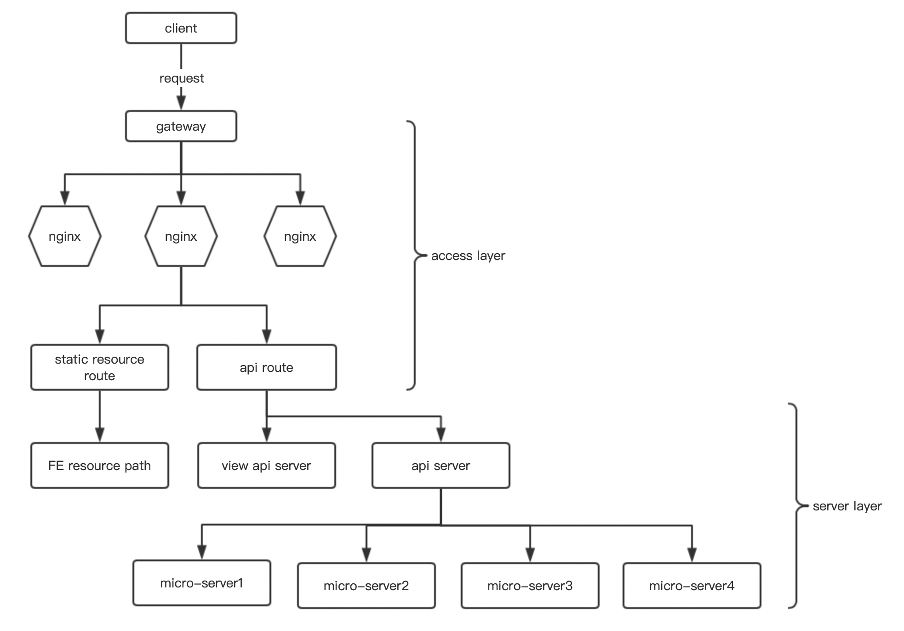

Introduction
Java
收藏
maven
Golang
收藏
Network
收藏
Database
收藏
OS&Linux
收藏
SoftwareEngineering
收藏
FE2Server
Spring
收藏
BigData
收藏
HDFS
MapReduce
Published with GitBook
FE2Server
FE2Server
背景
常规工程采用前后端分离方式，FE2Server通过rpc方式交互，各自开发、部署互不影响
重点环节
1.gateway接入层转发
2.nginx请求路由
静态资源路由
lua api路由
php api路由
3.server处理请求
服务层server：业务接口
视图层server：产出页面模板变量
工作流程

results matching "
"
No results matching "
"